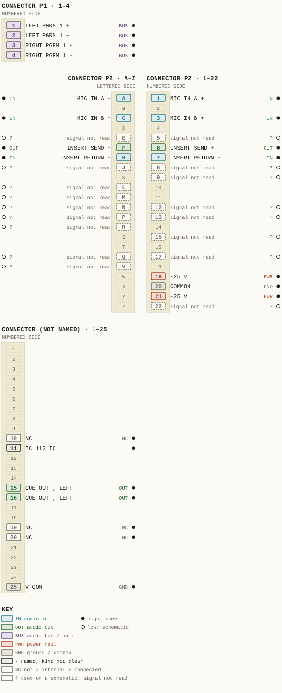
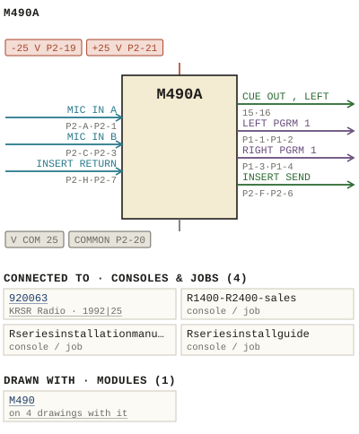

M490A
| Type | module |
| Category | INPUT-PRE-AMPS |
| Try it | simulator & front panel · download package (zip) |
| Earliest dated evidence | 1978|11 — title-block date |
| Evidence | "APP 2/78" in PUBLIC/Manuals + tech DOCUMENTS/Modules/M490A - Mic Pre-amp /M490A - 019 - Schematic.jpg |
| Confidence | high |
| All years found | 1978|11 |
| Used in jobs | 920063 (1992|25), R1400-R2400-sales, Rseriesinstallationmanual, Rseriesinstallguide |
| Variants | M490, M490B, M490C, M490D, M490E, M490F, M490G, M490H, M490J, M490K, M490L, M490M, M490N, M490T |
| Folder | DOCUMENTS/RECENT SCANS/WBSps.ca 20210315 - Large dwg - Needs rename |
| Folder | Modules/INPUT-PRE-AMPS/M490 |
| Folder | Modules/INPUT-PRE-AMPS/M490A |
Connections and circuit (ideal SPICE model)
Drawn live from its RTO-144 connections: run the generator, turn the gain, watch the VU. Open the netlist to see how the model is built.
Pictures


M490A.pinout.svg

M490A.connections.svg 1978 - M490A - 004.jpg
1978 - M490A - 004.jpg 1978 - M490A - 490-01-001 - MACHINE CONTROLS REVISED (2).jpg
1978 - M490A - 490-01-001 - MACHINE CONTROLS REVISED (2).jpg 1978 - M490A - 490-01-001 - MACHINE CONTROLS REVISED.jpg
1978 - M490A - 490-01-001 - MACHINE CONTROLS REVISED.jpg 1978 - M490A - 490-02-002 - CRII ILO IOK.jpg
1978 - M490A - 490-02-002 - CRII ILO IOK.jpg 1978 - M490A - 000 - Cover.jpg
1978 - M490A - 000 - Cover.jpg 1978 - M490A - 003.jpg
1978 - M490A - 003.jpg 1978 - M490A - 005.jpg
1978 - M490A - 005.jpg 1978 - M490A - 006.jpg
1978 - M490A - 006.jpg 1978 - M490A - 007.jpg
1978 - M490A - 007.jpg 1978 - M490A - 008.jpg
1978 - M490A - 008.jpg 1978 - M490A - 009.jpg
1978 - M490A - 009.jpg 1978 - M490A - 010.jpg
1978 - M490A - 010.jpg 1978 - M490A - 011.jpg
1978 - M490A - 011.jpg 1978 - M490A - 012.jpg
1978 - M490A - 012.jpg 1978 - M490A - 013.jpg
1978 - M490A - 013.jpg 1978 - M490A - 014.jpg
1978 - M490A - 014.jpg 1978 - M490A - 015.jpg
1978 - M490A - 015.jpg 1978 - M490A - 016.jpg
1978 - M490A - 016.jpg 1978 - M490A - 020 - PCB layout.jpg
1978 - M490A - 020 - PCB layout.jpg 1978 - M490A - 021 - Pin Out.jpg
1978 - M490A - 021 - Pin Out.jpg 1978 - M490A - 490-02-002 - IOK SWIO CUT ZIO.jpg
1978 - M490A - 490-02-002 - IOK SWIO CUT ZIO.jpg 1978 - M490A - 490-04-009 - IGNA PURPOSES FROM REMOTE EMFOCST ION' RELATED.jpg
1978 - M490A - 490-04-009 - IGNA PURPOSES FROM REMOTE EMFOCST ION' RELATED.jpg 1978 - M490A - 490-04-009 - USED FOR IGNA PURPOSES FROM REMOTE OCATION.jpg
1978 - M490A - 490-04-009 - USED FOR IGNA PURPOSES FROM REMOTE OCATION.jpg 1978 - M490A - wbsps - module - M490A 001.jpg
1978 - M490A - wbsps - module - M490A 001.jpg 1978 - M490A - wbsps - module - M490A 001_small.jpg
1978 - M490A - wbsps - module - M490A 001_small.jpg 1978 - M490A - wbsps - module - M490A 002.jpg
1978 - M490A - wbsps - module - M490A 002.jpg 1978 - M490A - wbsps - module - M490A 002_small.jpg
1978 - M490A - wbsps - module - M490A 002_small.jpg 19xx - DOC - 490-03-004 - WITH WHITE EPEXT.jpg
19xx - DOC - 490-03-004 - WITH WHITE EPEXT.jpg WBS M490A - Functional Diagram.jpg
WBS M490A - Functional Diagram.jpg WBS M490A - Schematic(1).jpg
WBS M490A - Schematic(1).jpg WBS M490A - Schematic.jpg
WBS M490A - Schematic.jpg WBS M490A - component layout.jpg
WBS M490A - component layout.jpg 1992 - 920063-01-002 - KRSR RADIO RADIO CONSOLE DC FUNCTIONAL - DRN PA - ENG PA - ISS 1.jpg
1992 - 920063-01-002 - KRSR RADIO RADIO CONSOLE DC FUNCTIONAL - DRN PA - ENG PA - ISS 1.jpg 1990 - R1400 - R2400 - 009.jpg
1990 - R1400 - R2400 - 009.jpg 1990 - R series installation ma - INSTALLATION R1200-R2000 AUDIO CONSOLES (2).jpg
1990 - R series installation ma - INSTALLATION R1200-R2000 AUDIO CONSOLES (2).jpg 1978 - 490-01-001 - M490A MIC INPUT MODULE FUNCTIONAL DIAGRAM - DRN GEB - ENG GEB - ISS 3 (2).jpg
1978 - 490-01-001 - M490A MIC INPUT MODULE FUNCTIONAL DIAGRAM - DRN GEB - ENG GEB - ISS 3 (2).jpg 1978 - 490-01-001 - M490A MIC INPUT MODULE FUNCTIONAL DIAGRAM - DRN GEB - ENG GEB - ISS 3.jpg
1978 - 490-01-001 - M490A MIC INPUT MODULE FUNCTIONAL DIAGRAM - DRN GEB - ENG GEB - ISS 3.jpg 1978 - 490-06-002 - M490A MIC INPUT MODULE COMPONENT LAYOUT - DRN GEB - ENG GEB - ISS 6.jpg
1978 - 490-06-002 - M490A MIC INPUT MODULE COMPONENT LAYOUT - DRN GEB - ENG GEB - ISS 6.jpg 1992 - 920063 - DOC - 920063-01-002 - PQWER DISIEIBUTIQN PSI.jpg
1992 - 920063 - DOC - 920063-01-002 - PQWER DISIEIBUTIQN PSI.jpgPinout & connections
Each contact as its own documents name it: 22 named (22 high confidence). An empty slot is a contact no page names. Hover a contact for its source; the table under the drawing lists them.
pinout (SVG) · connections (SVG) · pins (JSON)
Pin evidence — 39 contacts
| Pin | Signal | Kind | Confidence | Read from | Source |
|---|---|---|---|---|---|
| 10 | NC | not / internally connected | high | table | 1978 - M490A - 021 - Pin Out.jpg, p. 1 |
| 11 | IC 112 IC | named, kind not clear | high | table | 1978 - M490A - 021 - Pin Out.jpg, p. 1 |
| 15 | CUE OUT , LEFT | audio out | high | table | 1978 - M490A - 021 - Pin Out.jpg, p. 1 |
| 16 | CUE OUT , LEFT | audio out | high | table | 1978 - M490A - 021 - Pin Out.jpg, p. 1 |
| 19 | NC | not / internally connected | high | table | 1978 - M490A - 021 - Pin Out.jpg, p. 1 |
| 20 | NC | not / internally connected | high | table | 1978 - M490A - 021 - Pin Out.jpg, p. 1 |
| 25 | V COM | ground / common | high | table | 1978 - M490A - 021 - Pin Out.jpg, p. 1 |
| P1-1 | LEFT PGRM 1 | audio bus / pair | high | rto-144 | M490A.rto144.json, p. 1 |
| P1-2 | LEFT PGRM 1 | audio bus / pair | high | rto-144 | M490A.rto144.json, p. 1 |
| P1-3 | RIGHT PGRM 1 | audio bus / pair | high | rto-144 | M490A.rto144.json, p. 1 |
| P1-4 | RIGHT PGRM 1 | audio bus / pair | high | rto-144 | M490A.rto144.json, p. 1 |
| P2-A | MIC IN A | audio in | high | rto-144 | M490A.rto144.json, p. 1 |
| P2-1 | MIC IN A | audio in | high | rto-144 | M490A.rto144.json, p. 1 |
| P2-C | MIC IN B | audio in | high | rto-144 | M490A.rto144.json, p. 1 |
| P2-3 | MIC IN B | audio in | high | rto-144 | M490A.rto144.json, p. 1 |
| P2-E | — | used on a schematic, signal not read | low | schematic | 1978 - M490A - 490-02-002 - CRII ILO IOK.jpg, p. 1 “P? j P2-E 72-K” |
| P2-5 | — | used on a schematic, signal not read | low | schematic | 1978 - M490A - 490-02-002 - CRII ILO IOK.jpg, p. 1 “RrL e2ofi0 P2-6 P2-8 P2-5” |
| P2-F | INSERT SEND | audio out | high | rto-144 | M490A.rto144.json, p. 1 |
| P2-6 | INSERT SEND | audio out | high | rto-144 | M490A.rto144.json, p. 1 |
| P2-H | INSERT RETURN | audio in | high | rto-144 | M490A.rto144.json, p. 1 |
| P2-7 | INSERT RETURN | audio in | high | rto-144 | M490A.rto144.json, p. 1 |
| P2-J | — | used on a schematic, signal not read | low | schematic | WBS M490A - Schematic(1).jpg, p. 1 “P2-F P2-J P2-E F2-H” |
| P2-8 | — | used on a schematic, signal not read | low | schematic | 1978 - M490A - 490-02-002 - CRII ILO IOK.jpg, p. 1 “RrL e2ofi0 P2-6 P2-8 P2-5” |
| P2-9 | — | used on a schematic, signal not read | low | schematic | WBS M490A - Schematic(1).jpg, p. 1 “RJt P2-9,K < 3-L5” |
| P2-L | — | used on a schematic, signal not read | low | schematic | 1978 - M490A - 490-02-002 - CRII ILO IOK.jpg, p. 1 “P2-L” |
| P2-M | — | used on a schematic, signal not read | low | schematic | 1978 - M490A - 490-02-002 - IOK SWIO CUT ZIO.…, p. 1 “Pz-M” |
| P2-N | — | used on a schematic, signal not read | low | schematic | 1978 - M490A - 490-02-002 - CRII ILO IOK.jpg, p. 1 “EXt P2-N ON” |
| P2-12 | — | used on a schematic, signal not read | low | schematic | 1978 - M490A - 490-02-002 - CRII ILO IOK.jpg, p. 1 “Rio7 EXt 3k3 P2 - 12 2M OFF C35” |
| P2-P | — | used on a schematic, signal not read | low | schematic | 1978 - M490A - 490-02-002 - CRII ILO IOK.jpg, p. 1 “P2-P Ch” |
| P2-13 | — | used on a schematic, signal not read | low | schematic | 1978 - M490A - 490-02-002 - CRII ILO IOK.jpg, p. 1 “25v P2-13,W” |
| P2-R | — | used on a schematic, signal not read | low | schematic | 1978 - M490A - 490-02-002 - IOK SWIO CUT ZIO.…, p. 1 “P2 - R” |
| P2-15 | — | used on a schematic, signal not read | low | schematic | 1978 - M490A - 490-02-002 - IOK SWIO CUT ZIO.…, p. 1 “P2-15” |
| P2-U | — | used on a schematic, signal not read | low | schematic | 1978 - M490A - 490-02-002 - CRII ILO IOK.jpg, p. 1 “P2 = 17 P2-U” |
| P2-17 | — | used on a schematic, signal not read | low | schematic | 1978 - M490A - 490-02-002 - IOK SWIO CUT ZIO.…, p. 1 “Pz - 17” |
| P2-V | — | used on a schematic, signal not read | low | schematic | 1978 - M490A - 490-02-002 - CRII ILO IOK.jpg, p. 1 “Pz-V” |
| P2-19 | -25 V | power rail | high | rto-144 | M490A.rto144.json, p. 1 |
| P2-20 | COMMON also: COMMON (rto-144) | ground / common | high | rto-144 | M490A.rto144.json, p. 1 |
| P2-21 | +25 V | power rail | high | rto-144 | M490A.rto144.json, p. 1 |
| P2-22 | — | used on a schematic, signal not read | low | schematic | 1978 - M490A - 490-02-002 - IOK SWIO CUT ZIO.…, p. 1 “CRZi CTL >P2-22,2 comm 1N4063” |
Dates found in the documents
| Year | Kind | Text | File |
|---|---|---|---|
| 1978|11 | manual issue date | MANUAL ISSUE #4 J UNE 1978 |
1978 - M490A - 004.jpg |
| 1978|11 | title-block date | DRAWN 2/78 |
1978 - M490A - 490-01-001 - MACHINE CONTROLS REVISED (2).jpg |
| 1978|11 | title-block date | DRAWN 2/78 |
1978 - M490A - 490-01-001 - MACHINE CONTROLS REVISED.jpg |
| 1978|11 | title-block date | APP 2/78 |
1978 - M490A - 490-02-002 - CRII ILO IOK.jpg |
Physical manual inventory
| Item | Location | Status | Scanned |
|---|---|---|---|
| M490A - Mic Pre-amp - User Guide | SCANNED BUT NEEDS STICHING | ||
| M490A - Mic Pre-amp #User Guide | Recently scanned and stiched by WB |
Photos & scans (35)


Parts list — board M490A (33 parts)
From 1978 - M490A - 010.jpg, page 1 (scanned); also in timelines/data/bom.csv.
| Ref | Part | Value | Manufacturer | Mfr part no. |
|---|---|---|---|---|
| M490A | MIC InPUT MODULE | |||
| C8 | 150 uF/ 6 Kemet | T390E157M006As | ||
| C11 | pF Philips | 150 | 2222-638-70151 | |
| C13 | uF/10 Kemet | 220 | T390F227M0104S | |
| C19 | PF Philips | 4.7 | 2222-638-09478 | |
| C25 | pF Aselco | 6800 | cq92-MC-682m | |
| C26 | uF/25 Kemet | 2 . 2 | T390B225M025AS | |
| C31 | Capacitor uF/10 V Kemet T390B475M010AS CR11 Diode Fairchild | 4 .7 | 1n4148 | |
| C33 | pF Aselco cq92-MC-682m CR13 delete | 6800 | ||
| C34 | uF/25 V Kemet T390B225M025AS CR14 Motorola | 2 .2 | 1N4003 | |
| C36 | delete CR16 | |||
| C38 | uF/ 35 T390B105M035AS CR18 Zener | 1n4743 | ||
| C40 | uF/ 25 T390E476M025AS CR2O Fairchild | 47 | 1N4148 | |
| C42 | uF/10 V T390B475M010AS DS 1 Light bulb | 387 | ||
| C43 | uF/25 T3908225M025aS DS2 LED red Fairchild | 2 | FLV117 | |
| C46 | PF Aselco cQ92-MC-682m Transistor Nationa] | 6800 | 2N4401 | |
| C47 | delete | 2 | ||
| C48 | uF/25 Kemet T390C106M025AS 1 3 | 10 | 2n4403 | |
| C49 | Fa irchild | 2n3569 | ||
| C50 | uF/25 Philips 426ETF22 5 | 22 | 2n3645 | |
| C53 | 8 Nationa] | 1 | PN3645 | |
| CR1 | Diode Fairchild 1N4148 13 | 1 | ||
| CR3 | Motoro]a 1n4003 | 15 | ||
| CR4 | Fairchild | 1N4148 | ||
| CR7 | R3 delete | |||
| CR8 | delete R4 RS | 2 . 2 | ||
| CR9 | Fairchild | |||
| R6 | Resistor SW 2 .2 Philips R41 Resistor Xw 3k9 Philips | 5 % | ||
| R7 | delete R42 | 47k | ||
| R25 | Trim pot Piher PT 10h (2.5 ) | 5k | ||
| R26 | Resistor #W 22 Philips R6 1 delete | 5 % | ||
| R30 | R65 to delete | 15k | ||
| R36 | R73 delete | 22 |
Consoles & jobs it is connected to (4)
Their own drawings name this module.
| Job | Year | Drawing | Page |
|---|---|---|---|
| 920063 | 1992|25 | 1992 - 920063-01-002 - KRSR RADIO RADIO CONSOLE DC FUNCTIONAL - DRN PA - ENG PA - ISS 1.jpg | 1 |
| R1400-R2400-sales | 1990 - R1400 - R2400 - 009.jpg | 1 | |
| Rseriesinstallationmanual | 1990 - R series installation ma - INSTALLATION R1200-R2000 AUDIO CONSOLES (2).jpg | 1 | |
| Rseriesinstallguide | 1990 - R series install guide - INSTALLATION R1200-R2000 AUDIO CONSOLES (2).jpg | 1 |

Named in other drawings & documents (13)


From the manuals
Each manual split into its sections. Text that is the same in many Ward-Beck manuals (warranty, address, standard notes) is kept once on the Boilerplate page and linked.
Specifications (1)
Technical Data — 248 words · 1978 - M490A - 006.jpg, page 1
M490A MIC InPUT MODULE Input Sensitivity: Frequency Response: Noise: -60 to -30 dBm (ref _ 150 ohm source) +0 .5 dB from 30 Hz to 20 kHz _ -125 dBm EIn at maximum SENSITIVIty (20 Hz to 20 kHz )_ Ha rmonic Distortion: Less than 0 . 35 % THD from 30 Hz to 20 kHz at 20 dB above nomina ] operating eve1 or Tess _ Less than 0 .
1% at kHz at 20 dB above nomina 1 operating Teve1 or Tess_ Less than 0 . 5 % at kHz through cue channel at 20 dB above nomina ] operating Tevel or Tess Source Impedance 150 ohms ba lanced/unba lanced _ Input Impedance: 750 ohms minimum Output Impedances 30 ,000 ohms ba Ianced (program circuits) 60 , 000 ohms ba Ianced (cue circuits) _ Output Leve1 dBm nomina 1 +25 dBm maximum (equivalent voltage 600 ohms ) Input and output termina ]s designated by numbers are in phase , or Tower number 0 f numbered pa ir is in pha se with ower number 0 f other numbered pa ir _ Phasing : Logic Input Levels : (To operate Ch ON , Ch 0FF CUE.
) Logic 0 : 0 to +13 voIts Logic 1 : +16 to +24 volts_ Externa] Contro] Output: (Open co]lector current sink. ) Minimum Ioad impedance: 600 ohms Ma ximum Ioad current: 40 MA_ Maximum supply voltage: +24 voIts. Saturated co]lector voltage +2 voIts maximum at 40 mA Toad _ 1-1
- source: 1978 - M490A - 006.jpg, p. 1
Circuit description (3)
Circuit Description — 614 words · 1978 - M490A - 008.jpg, page 1
CIRCUII DESCRIPIION M49OA MIC InPUt MQDULE M49OA MIC InPUT MODULE Program Channel Switch 28 is CMOs dua ] flip-flop serving a $ Tatch to maintain the status 0 f 22 and 25 _ once they have been set to either the on or the OFF position 22 is CMOS ana 1og switch, serving as the active switching element 0 f the PROGRAM channe] The contro] voltage to operate 22 is derived from the logic circuitry within the module and is coupled to 22 via CR1.
To switch the channel on this control voltage is in the order 0 f 10 vo ] ts When the contro] voltage drops to volts_ the switch will be 0FF , resulting in signa ] attenuation 0 f more than 100 dB number 0 f individua ] input functions govern the status 0 f the dua] flip-flop 28 _ description 0 f each input function fo]lows: Initial Reset When power is initially applied to the system, the combination 0 f CR9 CR10 CR11 and C40 will Pu]1 down both clear inputs 0 f 28 until C40 is fully charged thus ensuring that switches 22 and 25 are in the OFF position_ Booster_Amplifier Fo] ]owing 22 integrated circuits 23 and 24 amp] i fy the audio s j gna 1 to nomina Teve1 0 f dBm (equivalent voltage) From the amp]ifier output the signa 1 is routed to the PROGRAM AssiGn switches Sw4 and Sw5 fo]lowed by the Teft and right mixing bus outputs Channel On Program Outputs Momentary operation 0 f the CHANNEL on switch Sw9 will Produce negative going pulse at 28 pin and preset the A-section 0 f 28 Alternatively , momentary ground closure 0 f the EXTERNAL CHANNEL on contro] input at P2 , pin N wili result in the same condition Both PROGRAM outputs P1 and P2 are designed t0 feed into stereo buses and each is divided into Teft and right output Operation 0 f ASSIGNMENT SWITCHES Sw4 or SW5 wii1 result in s imultaneous ass ignment to both Te ft and right channels 0 f the appropriate mixing buses Once the flip-flop is "preset its output at pin 15 changes from to (approximately +10 volts) _ On _ Fuithe ernore causi2the]PRoG arafeitebul?itg {ni tce CHANNEL On indicator Tamp DS3 to switch on With Q12 saturated the contro] common potential appears at the emitters 0 f Q13 and Q14 positive base potentia ] 1$ applied to either Q13 or Q14 depending on whether InpUt SELECTOR switch SW1 or SW2 is depressed Effectively Q13 and Q14 operate similarly to two AND gates The co]lectors 0 f the two transistors represent the outputs 0 f the ANDgates They appear at P2 pin 13 and These terminals are capab ]e 0 f inking maximum curent 0 f 40 MA each from 24 volt source and may be used for muting purposes Cue Channel The CUE s igna ] originates from bridging takeoff at the input 0 f the s ]ide attenuator Owing to the high input impedance 0 f the CUE channe] its operation has no effect on the ma in PROGRAM channe] 25 represents the audio switch for the CUE channe] Similarly to 22 the contro] voltage for 25 is generated in the Togic circuitry as described further on The output 0 f 25 is fo]owed by the booster amp] i fier 26 which in turn feeds the cue bus mixing network R101 through R104 _ 1 Control Logic The contro] voltages required to operate the PROGRAM and the CUE switch 22 switch 25 are generated with the a id 0 f circuitry 109- ic utilizing integrated circuits 27 through 210 _ 2 -2 2 -3
- source: 1978 - M490A - 008.jpg, p. 1
Circuit Description — 554 words · 1978 - M490A - 009.jpg, page 1
M490A MIC InPUT MODULE M49OA MIC Input MODULE When operating the CHANNEL On switch SW9 separate contact is closed accessible at P2 pins 15/5 This contact may be used for contro] or signa] ing purposes c) Operation of the "overpress switch SW1l, Tocated at the slide attenuator beyond the infinite position_ Th e on status 0 f the CUE channel is indicated by DS 2, which is driven by Q11.
Pin 0 f P2 is isolated through diode CR3 When connected in para ] Te] with the same output 0 f other modules it provides convenient OR gate configuration suitable to reset common timer each time CHANNEL on button is depressed Cue 0ff An additiona] feature ensures that the CUE channel wil1 Iways switch to 0FF whenever the s ]ide attenuator is moved onto or away from the infinite position regardless 0 f its prior state The contro] signa for this action i5 initiated by the change 0 f state 0 f the ATTEnUATOR Cut switch SW1o _ The resultant Teve1 change , being either positive or negative going , is processed through 27 29 and 210 The output produced at Pin of Zio witi a Iways be negative going pulse CR12 passeprehimapelye 500 2831 piec8nds 8 thevebyiocieaCRng_ the B-section 0 f the flip-flop and resulting in pin 11 0 f 28 to switch to (or rema in a t ) 0 volts , in turn switching the CUE switch 25 to 0FF .
A11 Iogic control inputs are buffered to guard against spurious noise and switch bounce _ Power Supply_Decoupling Power supply ing is provided by R146 to R149 and C50 to decry?] C53. CR16 and serve to prevent amp]ifier dama ge in the event 0 f supply votage reversa | The decoup] ing network drops the +25 volt supply ra jIs to nomina] voltage of +18 volts: Q15 decouples and filters the positive suppiy rail result ing in an output 0 f +12 volts to operate the CMOS circuitry In addition , 23 and 24 are further decoupled by R54 , R55 C21 and C22 _ Channel 0ff Momentary operation 0 f the CHANNEL 0FF switch Sw8 or momentary ground Tos ure 0 f the EXTERNAL CHANNEL 0FF contro] input at P2 pin 12 will result in negative 90 pulse at 28 , pin 3 and clear the A-section 0 f fnge producing volts at 28 pin 15 _ Consequently , 22 will switch 0FF , Q12 and eheorueonducontfo1Cautpues's?
ing F2,eptisgyishn_ 13 and will be disabled _ | A separate contact is a va i Tab ]e on Sw8 and is accessible at P2 , Pins 17/U . A separate CHANNEL 0FF tally Tamp is built into Sw8 and is connected to P2 , pins 18/V _ Cue The B-section 0 f 28 is used to contro] the so]id state cue switch 25 The flip-flop will change state each time negative g0 ing transition takes place at pin 0 f 28 Consequently with each input pulse , the CUE channe1 Wi1l a Iternate between ON and 0FF This change 0 f state can be bronght about by any one 0 f three different methods: 63 Momentary operation 0 f the CUE switch SW12 (Q) _ Momentary ground closure 0 f the EXTERNAL CUE contro] input at P2 , pin 11 2-5 2-4
- source: 1978 - M490A - 009.jpg, p. 1
Circuit Description — 384 words · 1978 - M490A - 007.jpg, page 1
M490A MIC InPut MODULE M490A MIC InPUt MODULE Power Requirements : +25 volts dc , 40 MA nomina] , 80 MA maximum. The M490A provides complete microphone channel facilities inclusive of s]ide mixing attenuator source selector and mixing bus a5$ ignment switches as required for mixing conso]e input Ambient Temperature: Dimens ions to 60 degrees Ce]sius _ 1 . 6 " wide X 14.15 " high 6 .
5 " deep (41 mm X 360 mm 165 mm) Input and Preamplifier The mutua ]Iy interlocked Input SELECTOR switches SW1 and Sw2 a 11ow the selection 0 f one 0 f two ava ilable microphone sources An additiona] contact is supp] ied for contro] purposes on each switch_ The impedance presented by the input transformer T1 is substantially higher than the nomina ] source impedance 0 f 150 ohm_ The secondary 0 f T1 is connected to the preamp]ifier consisting 0 f Q1 through Q7 and 21_ Input sensitivity 0 f the module may be varied by adjustment 0 f the SENSITIVITY trim pot R25 covering range 0 f 30 dB R2 5 is accessible through the module front pane] adjacent to the InpUt SELECTOR switches The ba Tanced preamplifier output appears at module connector P2 , pins 6 / F .
Inserts Two series-connected ba Tanced insert points are made ava i Iab]e at P2 pins 6 / F , 8 /J , 5 /E and 7/H, operating at nomi na 1 Teve1 0 f dBm . They a 70w the insertion 0 f anci1 Tary process ing equipment into the mixing channel igna path such a $ compressor equa ] izer or filter The provision 0 f two series - connected insert points permits the utilization 0 f the modu ]e in stereo systems such a $ the WBS model R1200/R2000 consoles In these and simi Iar a pplications the functions associated with the Teft and right Insertion Selectors M499) may both be inserted into the channel with the Teft channel insert function preceding the right channel function Fccentheefnsert points , the signa ] is routed to Att1, ba lanced slide attenuator featuring continuous mixing range 0 f more than 70 dB prior to cutoff The CUE channel feed is taken from the Input side 0 f the attenuator : 2- ] 1-?
- source: 1978 - M490A - 007.jpg, p. 1
Parts list (text) (1)
Parts List — 15 words · 1978 - M490A - 012.jpg, page 1
M49OA MIC InPUT MODULE M49OA MIC Input MODULE PART DESCRIPTIOn MFG MFG PART NUMBER PARI
- source: 1978 - M490A - 012.jpg, p. 1
Drawings (12)
Each scan with its trace laid over it: the slider runs from the scan to the vector drawing. Click one to see it large and save it as SVG, DXF, KiCad, PDF or PowerPoint.
Mic Input Module Functional Diagramviewer
Istart Timer Reset Off Tally Off Istopviewer
Adoed Seb Engviewer
Iok Swio Cut Zioviewer
Mic Input Module Front Panelviewer
Moceanaey Switch The Progran Channeviewer
With White Epextviewer
INTEGRATED CIRCUIT DATA 74C76 DUAL J-K FLIP-FLOP WITH CLEAR AND PRESETviewer
WBS M490A - Functional Diagramviewer
WBS M490A - Schematic(1)viewer
WBS M490A - Schematicviewer
WBS M490A - component layoutviewer
Read from the drawing title blocks.
| Drawing | Title | Date | Drawn by | Checked by | Iss. | Source |
|---|---|---|---|---|---|---|
| — | INTEGRATED CIRCUIT DATA 74C76 DUAL J-K FLIP-FLOP WITH CLEAR AND PRESET | file | ||||
| — | file | |||||
| — | file | |||||
| — | file | |||||
| — | file | |||||
| 490-01-001 | Machine Controls Revised | GEB (Gerry E. Bell) | file | |||
| 490-01-001 | Machine Controls Revised | GEB (Gerry E. Bell) | file | |||
| 490-02-002 | Crii Ilo Iok | GEB (Gerry E. Bell) | RA | file | ||
| 490-02-002 | Iok Swio Cut Zio | GEB (Gerry E. Bell) | 10 | file | ||
| 490-03-004 | With White Epext | GEB (Gerry E. Bell) | D | file | ||
| 490-04-009 | Igna Purposes From Remote Emfocst Ion' Related | GEB (Gerry E. Bell) | RLX | file | ||
| 490-04-009 | Used For Igna Purposes From Remote Ocation | GEB (Gerry E. Bell) | RUX | file |